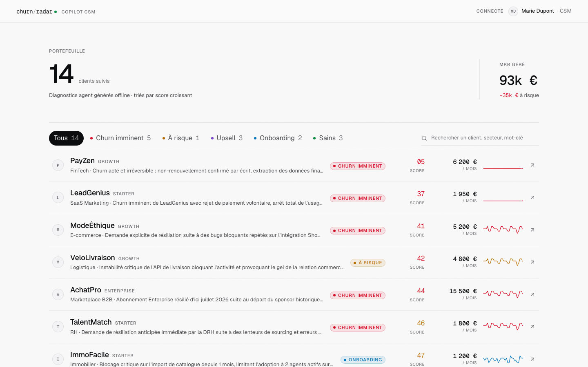
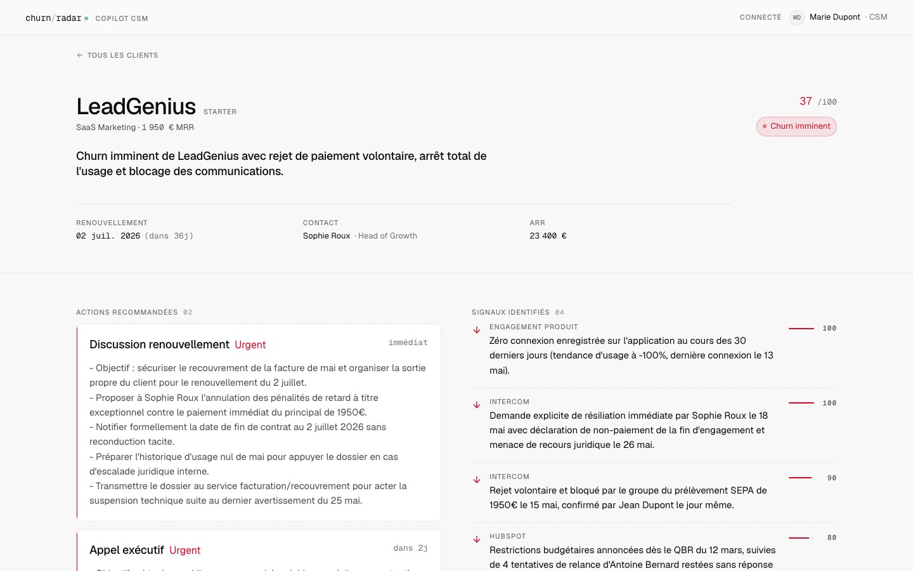
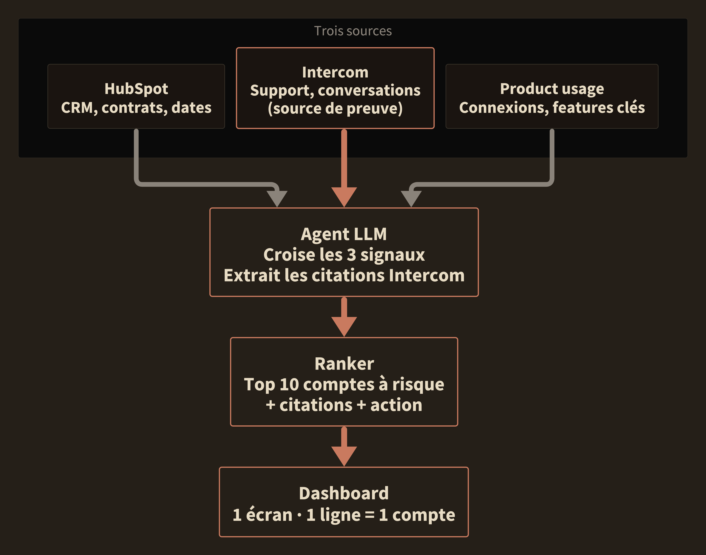
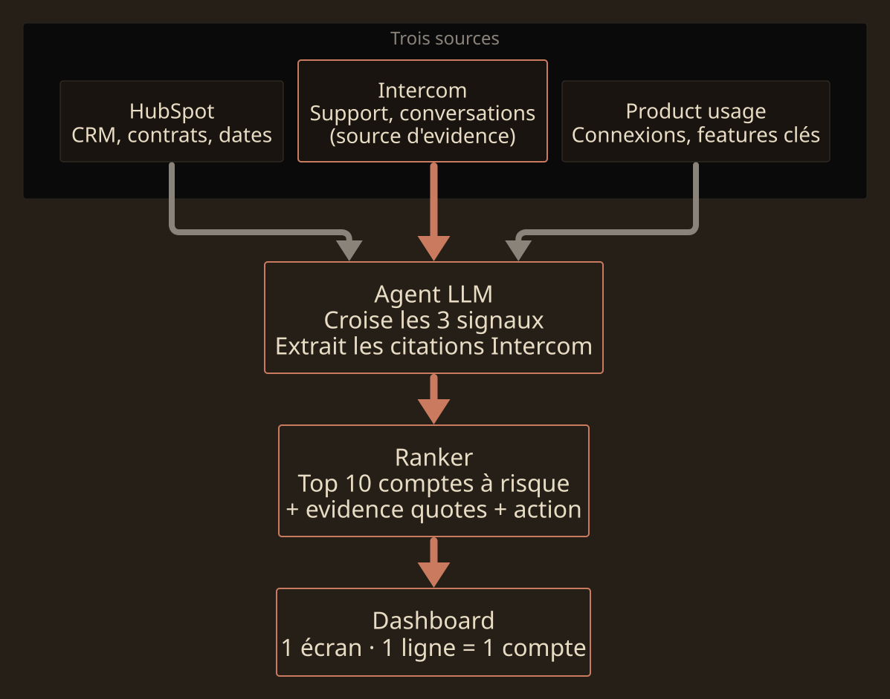

Proposition POC · Anti-churn agent
Suite à notre échange. Proposition cadrée : POC 2 semaines · 3K€.
Pour Jean-Philippe Kanaan · Mai 2026 · Confidentiel
Ce que j'ai entendu
Le problème
Ta vision
Mon analyse
Le scoring seul ne convainc pas
Le score reste utile pour prioriser. Mais un 86/100 sans contexte ne déclenche pas une action CSM. Ce qui fait basculer, c'est la phrase exacte du client qui a déclenché l'alerte. Le score trie, la preuve convainc.
Multi-agent : pas pour le POC
Un agent unique avec tool-calling suffit pour valider la valeur. Le multi-agent ajoute monitoring, debugging et régressions AVANT que le produit ait fait ses preuves. À garder pour la v2 si les métriques POC le justifient.
Le signal vit dans le non-structuré
Les CDP et CRM sont conçus pour la donnée structurée (events, dates, statuts). Le vrai signal churn vit dans les conversations support, tickets et calls. Le non-structuré est précisément là où le LLM bat les outils traditionnels.
Mock-up · aperçu du livrable
Mock-up sur données fictives, pour fixer le format visuel. Le POC remplace ces données par un agent qui lit, score et cite réellement 3 sources. La source des données est à cadrer ensemble.
Dashboard · vue portefeuille

Détail client · preuve + actions

POC scope
Les 3 questions auxquelles on répond
Q1 · Le signal est-il là ?
Peut-on détecter des signaux churn utiles dans les conversations support ? On regarde ensemble si les comptes flaggés par l'agent sont effectivement à risque selon ton jugement métier.
Q2 · Les citations sont-elles crédibles ?
Pour chaque alerte, l'agent doit sourcer la phrase exacte qui la justifie. Tu juges si c'est convaincant pour un CSM.
Q3 · Est-ce montrable ?
URL démo cliquable, dashboard portefeuille + détail client, citations sourcées. Un asset que tu ouvres directement devant un prospect, un futur CTO, un board.
Ce qui sort du POC
Livré
Un agent qui lit 3 sources, score 0-100, extrait les citations. Un dashboard deux vues : portefeuille + détail client. Code repo + runbook + URL démo.
Simulé
Volumes et contexte client. La source des données du POC est cadrée ensemble (cf. slide suivante).
Hors scope
Intégration prod, monitoring prod, multi-tenant, SSO/SOC2, multi-agent, calibrage sur tes clients spécifiques.
Méthode + données
Semaine 1 · Build agent
Semaine 2 · Dashboard + livraison
Data — à cadrer ensemble
Tu n'as pas de SaaS B2B en propre aujourd'hui. La source des données du POC sera tranchée lors d'un cadrage rapide avant kickoff, selon ce que tu peux mobiliser. Plusieurs options possibles. On discute des trade-offs ensemble.
Architecture POC
Stack : Python + FastAPI + OpenAI Responses API. Connecteurs HubSpot et Intercom via API officielle.


Roadmap
POC échoué : tu sors 3K€ plus malin sur les signaux churn qui comptent.
Phase 1 · POC
Preuve client v1. 3 sources, agent unique, dashboard.
Décision : le signal est là, ou pas.
3K€ · 2 sem
Phase 2 · Pilote
1 client en production. 3 intégrations réelles, HITL workflow, monitoring, evals.
Décision : le CSM lui fait confiance sans reprendre la main.
15-20K€ · 2 mois
Phase 3 · Scaler
Architecture spécialisée si justifiée par les métriques pilote. Sinon, agent unique scalé.
Décision : devient produit, ou reste sur-mesure.
à scoper
Pourquoi moi
10+ ans en product leadership B2B. Audits, embed PM, fractional CPO. Stack agentique testée en production sur 3 projets cette année.
AI PM, pas dev LLM. Mes agents naissent avec leurs evals, leurs traces, leur scoring auditable. Je build pour qu'un audit soit possible, pas pour qu'une démo plaise. Tu repars avec un agent que ton futur CTO peut challenger ligne à ligne.
Le code te reste, le repo est à toi. Pas de boîte noire, pas de dépendance. Tu repars avec un asset modifiable que ton futur CTO peut reprendre, étendre, ou brancher sur tes vraies sources.
Je ne suis pas l'agence qui dit oui à tout. Je suis le partner qui pousse autant qu'il livre.
Références
Transcréation multiculturelle d'assets
Une plateforme qui adapte les assets marketing à 160+ marchés culturels, pas juste les traduire. Chaque modification est expliquée pour validation humaine. Agent LLM + structured outputs.
Voir le mockup →Copilote memos d'investissement
Un agent qui retrieve les memos historiques pertinents, génère les comparable companies et propose les questions de due diligence. Cible : ~2 jours gagnés par deal. Agent multi-modèles + RAG sur archive interne.
Essayage virtuel de vêtements
Un client uploade sa photo et un vêtement, l'app génère en quelques secondes l'image photoréaliste du vêtement porté. Modèle vision spécialisé, interface web légère.
Voir le mockup →Pour creuser
Si l'approche te parle, on cale un échange pour trancher la source des données, cadrer le scope final et lancer le POC.
Préparé pour Jean-Philippe Kanaan · Confidentiel · Mai 2026